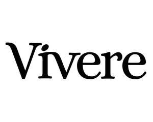

Trade Mark Journal No.2026/012 20 March 2026
UK00004313338 19 December 2025 (1,5,10,32,40,42,44)

- Class 1
- Vitamins for use in the manufacture of food supplements; Chemical supplements for use in the manufacture of vitamins; Antioxidants for use in the manufacture of food supplements; Proteins for use in the manufacture of food supplements; Stabilisers for vitamins; Vitamins for use in the manufacture of cosmetics; Vitamins for use in the manufacture of pharmaceuticals; Vitamins for the food industry.
- Class 5
- Dietary supplements promoting fitness and endurance; Health food supplements for persons with special dietary requirements; Vitamin supplements; Dietary supplements; Nutritional supplements; Herbal supplements; Probiotic supplements; Homeopathic supplements; Flaxseed dietary supplements; Calcium supplements; Chlorella dietary supplements; Anti-oxidant supplements; Protein supplements; Dietary supplements consisting of vitamins; Prebiotic supplements; Lecithin dietary supplements; Food supplements; Mineral dietary supplements; Zinc dietary supplements; Mineral nutritional supplements; Propolis dietary supplements; Acai powder dietary supplements; Liquid dietary supplements; Nutraceuticals for use as a dietary supplement; Dietary and nutritional supplements; Vitamin supplements for animals; Vitamin and mineral supplements; Protein dietary supplements; Linseed dietary supplements; Liquid nutritional supplements; Yeast dietary supplements; Liquid vitamin supplements; Casein dietary supplements; Enzyme dietary supplements; Dietary supplements for animals; Dietary supplements for pets; Anti-oxidant food supplements; Dietary food supplements; Alginate dietary supplements; Albumin dietary supplements; Liquid herbal supplements; Flaxseed oil dietary supplements; Wheat dietary supplements; Vitamin and mineral supplements for pets; Dietary supplements for infants; Dietary supplements for humans; Pollen dietary supplements; Energy gels (dietary supplements); Glucose dietary supplements; Vitamin and mineral food supplements; Protein powder dietary supplements; Dietary supplements in powder form; Mineral dietary supplements for animals; Dietary supplements with a cosmetic effect; Nutritional supplements for veterinary use; Medicated food supplements; Dietary supplements for medical use; Mineral dietary supplements for humans; Whey protein dietary supplements; Food supplements for sportsmen; Nutritional supplements consisting primarily of magnesium; Dietary supplements consisting primarily of magnesium; Soy protein dietary supplements; Vitamin supplement patches; Health-aid foods supplements containing ginseng; Health food supplements made principally of vitamins; Vitamin preparations in the nature of food supplements; Dietary supplement drinks; Soy isoflavone dietary supplements; Dietary supplements and dietetic preparations; Linseed oil dietary supplements; Nutritional supplements consisting of fungal extracts; Brewer's yeast dietary supplements; Nutritional supplements consisting primarily of calcium; Folic acid dietary supplements; Calcium tablets as a food supplement; Dietary supplements consisting primarily of calcium; Nutritional supplements consisting primarily of zinc; Dietary supplements for controlling cholesterol; Nutritional supplements consisting primarily of iron; Herbal dietary supplements for persons special dietary requirements; Dietary supplements and dietetic preparations containing CBD oil; Dietary supplements consisting primarily of iron; Food supplements for dietetic use; Nutritional supplement energy bars; Multivitamins; Dietary supplement drink mixes; Dietary food supplements used for modified fasting; Health food supplements made principally of minerals; Food supplements for medical purposes; Activated charcoal dietary supplements; Zinc supplement lozenges; Food supplements in liquid form; Fitness and endurance supplements; Food supplements for non-medical purposes; Natural dietary supplements for treating claustrophobia; Protein supplement shakes; Wheat germ dietary supplements; Dietary supplements for pets in the nature of a powdered drink mix; Vitamin supplements for use in renal dialysis; Ground flaxseed fiber for use as a dietary supplement; Royal jelly dietary supplements; Pine pollen dietary supplements; Diet capsules; Dietary supplements for humans not for medical purposes; Food supplements consisting of amino acids; Nutritional supplement meal replacement bars for boosting energy; Powdered nutritional supplement drink mix; Dietary supplements for human beings; Vitamins and vitamin preparations; Health-aid foods supplement containing red ginseng; Preparations for supplementing the body with essential vitamins and microelements; Capsules for medicines; Multi-vitamin preparations; Nutritional supplements made of starch adapted for medical use; Food supplements consisting of trace elements; Powdered nutritional supplement energy drink mix; Powdered fruit-flavored dietary supplement drink mix; Delivery agents in the form of coatings for tablets that facilitate the delivery of nutritional supplements; Preparations of vitamins; Antioxidant pills; Dietary supplemental drinks; Medical diagnostic test strips; Chemical test reagents [medical]; Chemical preparations for testing blood for medical purposes; Male fertility test kits; Prenatal vitamins; Gummy vitamins; Vitamin tablets; Vitamin and mineral preparations; Vitamin preparations; Vitamin drops; Antioxidants; Effervescent vitamin tablets; Multivitamin preparations; Vitamin fortified beverages for medical purposes; Anti-oxidants obtained from herbal sources; Vitamin A preparations; Vitamin C preparations; Mixed vitamin preparations; Vitamin D preparations; Anti-oxidants for dietary use; Vitamin B preparations; Ganoderma lucidum spore powder dietary supplements; Tonics [medicines]; Probiotic preparations for medical use to help maintain a natural balance of flora in the digestive system.
- Class 10
- Medical test kits for diabetes monitoring for home use; Test probes for medical use; Apparatus for blood tests [for medical use]; Urine testing instruments for medical diagnostic purposes.
- Class 32
- Beverages containing vitamins; Non-alcoholic drinks enriched with vitamins and mineral salts; Drinking water with vitamins; Vitamin fortified non-alcoholic beverages; Vitamin enriched sparkling water [beverages].
- Class 40
- Custom manufacturing of dietary supplements for humans .
- Class 42
- Microbiological testing.
- Class 44
- Health screening; Health screening services; Health assessment services; Consultancy relating to health care; Beauty care services provided by a health spa; Healthcare; Providing information relating to dietary and nutritional supplements; Providing information about dietary supplements and nutrition; Health clinic services [medical]; Medical health assessment services; Provision of health care services; Consultancy services relating to health care; Provision of health information; Health advice and information services; Professional consultancy relating to health; Providing health information; Nutrition counseling; Health assessment surveys; Medical testing; Medical and health services relating to DNA, genetics and genetic testing; Medical testing services, namely, fitness evaluation; Health care; Health risk assessment; Health screening services in the field of asthma; Health risk assessment surveys; Genetic testing for medical purposes; Health care relating to fasting; Cholesterol testing; Medical testing for diagnostic or treatment purposes; Medical testing for diagnostic and treatment purposes; Health care relating to remedial exercise; Services for the testing of urine; Services for the testing of blood.
John Joseph Soiza